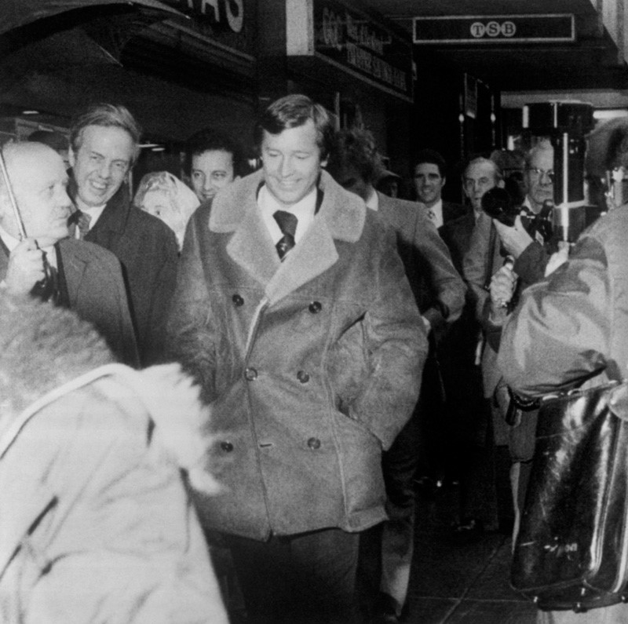

Chương 11

hiều fan hâm mộ trẻ cho rằng: Vì ỷ già, và ỷ vào danh tiếng lẫy lừng, Sir Alex Ferguson mới dám thường xuyên “cà khịa” trọng tài và các quan chức của liên đoàn bóng đá. Điều đó hoàn toàn sai.Ngay cả khi còn trẻ và vô danh, Alex đã “dọc ngang nào biết trên đầu có ai” rồi. Tháng một - 1974, anh bị Liên Đoàn Bóng Đá Scotland (SFA) phạt 10 bảng vì tội “chửi bậy”.Tháng một - 1975, anh lại bị phạt 50 bảng vì “mắng trọng tài biên”. Lần này, Alex không những từ chối đóng tiền phạt, mà còn dọa kiện lại SFA. “Tôi không có 50 bảng”, anh tuyên bố, “nhưng sẵn sàng bỏ ra 10 000 để đem họ ra tòa”. Ba tháng sau, Alex vào tận phòng trọng tài để mắng, và nhận tiếp án phạt 25 bảng.
Vì sao Alex hay có những phát ngôn bừa bãi dẫn đến bị phạt? Dĩ nhiên, có lúc anh bức xúc thật, nhưng thường thì đó là việc làm đầy dụng ý. Mục đích của Alex một phần là "dằn mặt" trọng tài, phần khác nhằmchuyển sức ép từ cầu thủ sang bản thân, thà mình chịu áp lực, chứ không để học trò phải gánh. Sau một trận thua mất mặt chẳng hạn, Alex sẽ kiếm cớ gây sự với trọng tài, để báo chí chĩa mũi dùi vào anh, mà xao lãng việc chỉ trích các cầu thủ. Trước mỗi trận đấu quan trọng, anh cũng hay đưa ra những phát ngôn gây sốc nhằm thu hút sự chú ý của báo giới và người hâm mộ, khiến học trò mình dễ thở hơn.
Ban lãnh đạo St Mirren không quan tâm những án phạt lẻ tẻ, bởi trên sân cỏ, Alex đem về những thành quả rất đáng khích lệ.St Mirren kết thúc mùa 1974-1975 trong Top 6, trụ lại được hạng nhất, và tiếp tục giữ vững vị trí này ở mùa 1975-1976.Nhưng bản thân Alex thì chưa hài lòng, bởi mục tiêu của anh là giải ngoại hạng.Trong mỗi trận đấu, anh luôn đòi hỏi cầu thủ phải nỗ lực hết mình. Không chỉ thắng là đủ, mà phải nỗ lực hết mình! Có lần St Mirren thắng trận đến 5-0, nhưng cầu thủ vẫn bị mắng, vì tuy thắng song chơi chưa thật hay!Tài năng trẻ Billy Stark, vì phạm sai lầm dẫn đến bàn thắng cho đối phương, từng bị Alex…ném giày vào người.May là giày chỉ trúng vào vai, không đến nỗi bị khâu mấy mũi như hậu bối David Beckham. Dù vậy, chính Stark thừa nhận mình “nên người” là nhờ Alex: “Nếu thầy chỉ nói nhẹ nhàng, chưa chắc tôi đã nghe. Chính nhờ bị ném cái giày, tôi mới nhớ đời và quyết tâm không sai phạm nữa. Thầy đã giúp tôi trở nên hoàn thiện hơn”.
Hè 1976, toàn đội St Mirren có dịp chu du Trung Mỹ, kết hợp vừa nghỉ dưỡng vừa thi đấu giao hữu. Họ đá với Trinidad hai trận, với Barbados, Guyana, và Surinam mỗi đội một trận.Đáng nhớ nhất là trận gặp Guyana, khi tiền đạo Robert Torrance của St Mirren liên tục bị gã trung vệ to con bên đội bạn chơi xấu. Đầu hiệp hai, khi Torrance lại bị đá té lăn lóc một lần nữa, HLV Alex Ferguson đùng đùng xỏ giày vào sân: “Đủ lắm rồi, tên đô con kia đừng tưởng muốn làm gì cũng được, ông ra trị mày đây!” Trợ lý Provan hoảng hốt can ngăn, song Alex đã quyết chí rồi. Vừa xung trận, anh đã đá cho trung vệ Guyana ngã lăn quay, bị trọng tài chỉ mặt cảnh cáo. Mấy phút sau, anh chơi thêm cú nữa, khiến đối phương đổ như chuối rụng, và lãnh thẻ đỏ rời sân! Bị thẻ đỏ nhiều lần trong đời, nhưng theo lời Alex, đây là lần duy nhất anh cố tình triệt hạ đối thủ.
Trở lại Scotland, St Mirren trải qua mùa giải 1976-1977 một cách gần như hoàn hảo.Họ bất bại trong suốt 28 trận, chỉ thua đúng hai lần, lên ngôi vô địch giải hạng nhất, đem về cho Alex Ferguson danh hiệu đầu tiên trong đời HLV.Mùa 1977-1978, tuy cực kỳ vất vả, đội cuối cùng trụ lại thành công ở giải ngoại hạng.
Bốn năm ở Love Street, Alex hoàn thành tất cả các mục tiêu đặt ra.Thăng lên ngoại hạng?Đã thành công.Thu hút khán giả? Thời Cunningham, trung bình mỗi trận tại Love Street chỉ có 1 000 – 2 000 người, trong mùa 1977-1978, con số đã tăng lên 11 000. Tăng doanh thu? Mùa 1974-1975, St Mirrenthu vào 83 840 bảng, mùa 1978-1979, thu đến 286 826 bảng. Thu nhập tăng mạnh một phần nhờ tiền bán vé, phần khác nhờ sáng kiến của Alex: Tổ chức “xổ số kiến thiết”, bán vé số cho cổ động viên và người dân. Trò sổ xố này đem về đến 4 000 bảng mỗi tuần.
“Thời Alex Ferguson, cứ như là có phép màu”, Bill Waters, cựu giám đốc St Mirren, hồi tưởng “Đội bóng tiến bộ hẳn, khán giả lũ lượt kéo tới sân, thật là ấn tượng vô cùng. Thời kỳ đó chỉ có vài năm, nhưng tôi nhớ mãi không quên. So sánh về tương quan lực lượng thì những gì Alex đã đạt được tại St Mirren không hề kém thành quả sau này anh ấy đem lại cho Aberdeen và Manchester United. Nếu anh ấy ở lại, không chừng đội VĐQG năm 1980 là chúng tôi, chứ chẳng phải Aberdeen đâu.”
Fan hâm mộ, từ chỗ bỏ rơi, ùn ùn trở lại St Mirren, giúp CLB trở nên lớn mạnh hơn. Khi đội bóng cần, họ sẵn sàng bỏ tiền túi ra giúp đỡ. Minh chứng rõ ràng là vụ chuyển nhượng Jackie Copland. Dundee đòi đến 17 000 bảng cho cầu thủ lão luyện này, nhưng trong két sắt Love Street chỉ có đúng 3 000.Alex bèn hỏi hội cổ động viên St Mirren, hội liền hào phóng cho mượn 14 000 còn lại.
Được lòng CĐV, nhưng Alex lại không được lòng Willie Todd, người tiếp quản ghế chủ tịch St Mirren từ Harold Currie.Alex vốn không nghe lời ai, trong khi Todd không chịu được những ai không nghe lời mình. Trong thời gian cầm cương ở St Mirren, Alex từng từ chối lời mời từ Aberdeen và Rangers, song khi xung đột với Todd ngày một lên cao, Aberdeen lại đưa ra lời mời thứ hai, khiến anh phải suy nghĩ. Đề nghị được tăng lương của Alex vừa bị Todd bác bỏ, Aberdeen lại là đội bóng lớn hơn hẳn St Mirren, vừa đứng hạng ba giải ngoại hạng và vô địch League Cup, thế thì còn đợi gì mà không sang Aberdeen? Chỉ có điều, hợp đồng giữa Alex và St Mirren vẫn còn hiệu lực, nếu vô cớ xé hợp đồng ắt phải bồi thường.
Trong lúc Alex còn phân vân, chưa quyết định, Willie Todd ra tay trước. Ông ta cho gọi HLV trưởng đến văn phòng, thông báo sa thải anh, sau đó cầm giấy lần lượt đọc 15 điều mà ông cho là “sai phạm” của Alex. Trong đó có những điều như:
-Chửi nữ thư ký
-Nhận trái phép 25 bảng mỗi tuần
-Tự tiện thưởng tiền cho cầu thủ
-Cho bạn mượn xe của CLB
-Đi xem trận chung kết Cúp C1 năm 1978 ở London
-Dàn xếp tỷ số: Báo trước cho nhà cái biết là St Mirren sẽ thắng Ayr United.
Todd vừa đọc dứt lời, Alex phá lên cười.
“Đừng cười nữa xem nào”, ngài chủ tịch tỏ vẻ khó chịu.
“Xin lỗi, nhưng tôi không nhịn được”, Alex đáp, “Tôi tưởng sa thải HLV thì chỉ cần một lý do là không đủ trình độ thôi chứ”.
Quyết định của Todd thật ra là một sự giải thoát, mở đường cho Alex tới Aberdeen. Tuy nhiên, vì cảm thấy cái danh sách 15 điều trên quá vô lý, Alex kiện ra tòa, đòi St Mirren phải bồi thường vì tội sa thải trái phép.
Đọc cáo buộc từ phía St Mirren, hẳn bạn đọc cũng thấy những điều như “cho bạn mượn xe”, “chửi nữ thư ký” đều là nhỏ nhặt, tủn mủn, không ai sa thải HLV vì những lý do “trời ơi đất hỡi” như vậy. Điều “đi xem chung kết C1” lại càng nực cười, chẳng lẽ đi xem bóng đá cũng phải xin phép CLB chủ quản?
Nghiêm trọng nhất là cáo buộc dàn xếp tỷ số. Nguyên ủy chuyện này như sau: Alex Ferguson có người bạn làm nhà cái tên David McAllister. Khi nói chuyện với nhau, Alex cho McAllister biết St Mirren sẽ thắng Ayr United.St Mirren quả thật thắng Ayr United, và McAllister thắng 3900 bảng tiền độ.
Lại thêm một điều nực cười nữa! HLV nào lại không muốn đội mình thắng trận, vấn đề là đối thủ có để cho thắng không chứ?Trước giờ nói đến bán độ, chỉ nghe cố tình thua, có nghe đến…cố tình thắng bao giờ? Khi phân xử đến khoản này, quan tòa nhận xét: Thông tin Alex cung cấp cho McAllister chẳng có chút giá trị gì, chỉ cần mở báo thể thao ra đọc, ngày nào chẳng có những dự đoán như vậy. Cáo buộc cố nhiên bị bác bỏ.
Tuy thế, tòa ra phán quyết: Cáo buộc Alex nhận trái phép 25 bảng mỗi tuần, và tự tiện thưởng cầu thủ là có cơ sở, do đó St Mirren không phải bồi thường.Alex không còn tâm trạng kháng án, vì lúc này cha anh lâm bệnh nặng.Ông qua đời hai tháng sau đó, hưởng thọ 66 tuổi.
Với di sản do Alex Fergusonđể lại, St Mirren giữ vững vị trí tại giải ngoại hạng. Mùa 1979-1980, họ thậm chí cán đích ở vị trí thứ ba, giành quyền tham dự Cúp C3. Nhưng Alex không có gì phải nuối tiếc.Ở Aberdeen, anh sẽ giành được những thành tích gấp mấy lần hơn.
Thành công của Alex khiến Willie Todd cũng “thơm lây”. Nhắc tới Todd, thiên hạ nhớ ngay đến “người duy nhất dám sa thải Sir Alex Ferguson”!

Alex Ferguson sau khi bị St Mirren sa thải (ảnh: whoateallthepies.tv)